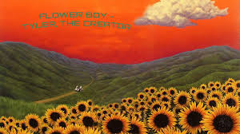
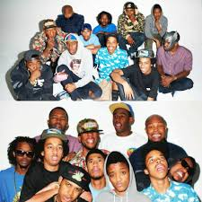

Creación del álbum
Flower Boy fue lanzado el 21 de julio de 2017. Representa un punto de madurez en la carrera de Tyler, The Creator, mostrando un enfoque más personal y melódico. Flower Boy (titulado de manera alternativa como Scum Fuck Flower Boy[3]) es el quinto álbum de estudio del rapero estadounidense Tyler, The Creator. Fue publicado el 21 de julio de 2017 a través de Columbia Records. Producido enteramente por Tyler, el disco cuenta con colaboraciones de Frank Ocean, Steve Lacy, A$AP Rocky, Anna of the North, Rex Orange County, Lil Wayne, Jaden Smith, Estelle y Kali Uchis. Flower Boy contó con cinco sencillos, "Who Dat Boy", "911 / Mr. Lonely", "See You Again", "Ain't Got Time" y "Boredom". El álbum contó con un excelente recibimiento por parte de la crítica, seguidores y especialistas, con el disco obteniendo la nominación por Mejor Álbum de Rap en los Premios Grammy de 2018. También fue exitoso comercialmente, debutando en el puesto 2 de la lista Billboard 200. Fue incluido entre los mejores álbumes del 2017 y de la nada.
Colaboraciones
El disco cuenta con colaboraciones de Frank Ocean, A$AP Rocky, Kali Uchis, Steve Lacy y Rex Orange County.
Datos curiosos
- Fue nominado al Grammy como Mejor Álbum de Rap.
- La portada fue diseñada por el artista Eric White.
- Es considerado uno de los discos que redefinieron el sonido de Tyler.